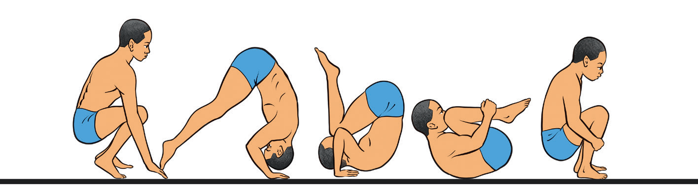

over the back and return to a standing position. It helps to develop body awareness, coordination and confidences in rolling movements, serving foundation for more gymnastic skills. To perform forward roll, do the following:
- (i)Stand up straight with your arms raised;
- (ii)Bend your knees and place your hands on the floor in front of you;
- (iii)Bend your head forward, bringing your chin to your chest;
- (iv)Roll forward over your back smoothly as shown in Figure 4.1; and
- (v)Finish by landing on your feet and standing up.

abcdeFigure 4.1: Forward roll
Activity 4.2
Search from internet and other sources on how to execute a forward roll, and practice it repeatedly until you master the skill.
Backward roll
A backward roll is a gymnastic skill where a gymnast rolls backward over their shoulders and returns to a standing or seated position. It helps develop core strength, coordination, and body control, making it an essential skill for advanced moves like back handsprings and back tucks. The following steps will help you practice backward rolls:
- (i)Stand, then squat with feet together keeping arms raised and chin inserted towards the chest to protect the neck;
- (ii)Sit down and roll onto your back, bending your knees toward your chest;
- (iii)Place hands by your ears, palms facing upward and push them against the floor to lift the back over the head;
- (iv)Roll onto feet and stand up smoothly keeping arms raised for balance, Figure 4.2; and
- (v)Repeat the practice several times to perfect the skill.